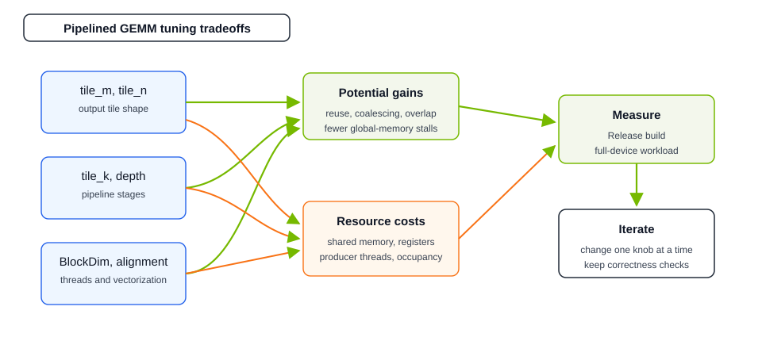

Achieving High Performance#
Below, we present general advice and examples to help you achieve high performance with cuBLASDx.
Building Advice#
Use the newest CUDA SDK available
Prefer CMake as a build system
- Always use
-O3 -DNDEBUGflags for compilation (orCMake Release build type) cuBLASDx and CuTe make extensive use of runtime asserts, included only in debug builds
- Always use
General Advice#
Use pipelining API whenever possible
Use suggested layouts whenever possible
Start with the library-provided defaults for optimal compute performance.
Prefer the register fragment API over the shared memory API.
The best parameters for compute-bound and memory-bound kernels may differ.
Whenever possible, batch BLAS operations so that enough CUDA blocks are launched in a grid to fully utilize the GPU for peak performance.
Merge adjacent memory-bound kernels (pre- and post-processing) with a BLAS kernel to reduce global memory accesses.
If possible, use a combination of precisions that has MMA support.
Use the tensor execute(…) API for improved I/O and matrix multiplication performance.
Use cublasdx::copy for copying shared and global memory tensors. This should automatically vectorize loads and stores.
Use cublasdx::copy_fragment for copying register fragments to shared and global memory tensors. This should also automatically vectorize loads and stores.
Use 16-byte (128-bit) aligned pointers, and use MaxAlignment (an alias for
Alignment<16, 16, 16>).
Matrix Layouts#
We recommend using the tensor API along with get_layout_smem_*(), suggest_layout_smem_*(), and cublasdx::make_tensor functions. This allows you to use custom layouts for matrices, which can provide better performance and better match your kernel’s requirements.
Try using suggest_layout_smem_*(), especially for
AandBmatrices, to achieve better GEMM and I/O performance.Use get_layout_smem_*() for a matrix if you need it to be in plain column- or row-major order.
The best layouts for GEMM may differ from the best layouts for the entire kernel; experiment with various approaches.
For use cases that do not have dedicated MMA (such as fp32-fp32-fp32), try using get_layout_smem_*() and suggested_leading_dimension_of to improve shared memory access patterns.
- For register fragment APIs, always choose an accumulator that matches your layouts:
suggest_accumulator()forsuggest_layout_smem_*()get_accumulator()forget_layout_smem_*()
Example
Example of using maximum alignment, cublasdx::copy, and suggested layouts for shared memory to increase performance.
using BLAS = decltype(Size<128, 128, 128>() + Type<type::real>() + Precision<__half, __half, double>() + MaxAlignment() + Block() + ...);
// Tensors with global memory data
auto a_global_tensor = cublasdx::make_tensor(a, BLAS::get_layout_gmem_a());
auto b_global_tensor = cublasdx::make_tensor(b, BLAS::get_layout_gmem_b());
auto c_global_tensor = cublasdx::make_tensor(c, BLAS::get_layout_gmem_c());
auto out_global_tensor = cublasdx::make_tensor(output, BLAS::get_layout_gmem_c());
// Tensors with shared memory data
auto a_shared_tensor = cublasdx::make_tensor(smem_a, BLAS::suggest_layout_smem_a());
auto b_shared_tensor = cublasdx::make_tensor(smem_b, BLAS::suggest_layout_smem_b());
// 16-byte (128-bit) alignment helps vectorize (if possible) copying between shared and global memory
using blas_alignment = cublasdx::alignment_of<BLAS>; // 16, 16, 16
cublasdx::copy<BLAS, blas_alignment::a>(a_global_tensor, a_shared_tensor);
cublasdx::copy<BLAS, blas_alignment::b>(b_global_tensor, b_shared_tensor);
cublasdx::copy_wait();
// Get suggested accumulator, matching shared memory layouts for A and B
auto accumulator = BLAS::suggest_accumulator();
// 16-byte (128-bit) alignment and suggested layouts help improve shared memory IO in GEMM
BLAS().execute(a_shared_tensor, b_shared_tensor, accumulator);
auto d_fragment = accumulator.make_partition_and_copy(c_global_tensor);
cublasdx::axpby(alpha, accumulator.get_results(), beta, d_fragment);
// Partition out_global_tensor and copy this thread's elements into appropriate locations
accumulator.partition_and_copy(d_fragment, out_global_tensor);
Memory Management#
Avoid unnecessary reads/writes to global memory.
Ensure global memory accesses are coalesced.
Use shared memory or extra registers to store temporary data.
Offload any element-wise pre- and post-processing to transform functors that can be passed to execute(…) to avoid trips to shared memory.
Advanced#
If matrix-wide pre- and/or post-processing is required, try to partition data into registers to avoid shared memory accesses.
For BLAS loads that do not fully utilize the GPU, consider running parallel kernels in separate streams.
Use the Nsight Compute Occupancy Calculator [6] and/or the cudaOccupancyMaxActiveBlocksPerMultiprocessor [8] function to determine the optimal launch parameters
Use the Nsight Compute Occupancy Calculator [6] or Nsight Compute [7] to determine what extra resources are available without reducing occupancy.
Pipelining#

Start with default pipeline depth (skip this template argument)
Make sure
K / tile_kis at least the chosen pipeline depth; otherwise there are not enough K tiles to keep all stages valid.Tune
tile_m,tile_n,tile_k,tile_threads, alignment, and pipeline depth together. Larger tiles and deeper pipelines can improve reuse and overlap by keeping more asynchronous load and compute stages in flight, but also increase shared-memory pressure and may reduce occupancy.Use
EnableInputStreamingwhen no per-element input preprocessing is required.Use
StaticBlockDimonly when the kernel will not use more threads than the descriptor’sBlockDim.- If you don’t need extra flexibility, use the
internal_accumulatorAPI on architectures not supporting TMEM,
reusable_accumulatormay cause increased register pressure and performance decreaseif you use the manual
execute(accumulator)flow, callfinish_accumulation()with the same thread scope before reading accumulator results; do not guard it withif(accumulator.is_thread_active())because internal warp-specialization may require broader participation.epilogue(accumulator, functor)calls it internally
- If you don’t need extra flexibility, use the
- If possible, stick to
heuristic_blocksizeand useepilogue_syncinside epilogue functor this is necessary to allow warp-specialization with register trading in some cases
- If possible, stick to
For full-device GEMM examples, interpret timings in context: block-level examples measure one tile configuration, while device-level examples include grid scheduling and compare against a reference path whose heuristic/setup cost may be excluded.